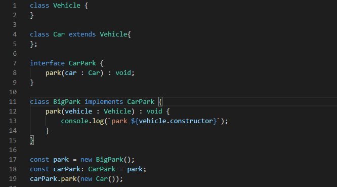
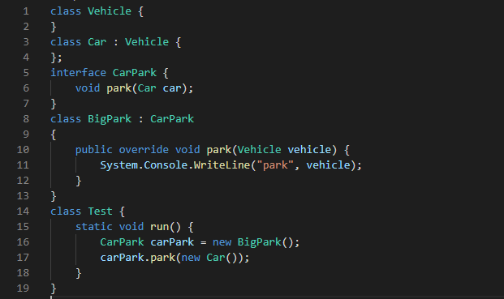
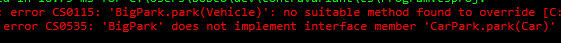
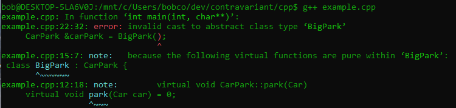

class: center, middle # Contraviance in TypeScript ## Bob Cook ( @typescriptbob ) ??? This shows what is meant by contraviance and how TypeScript differs from some other languages in this area. --- ### TypeScript functions are contravarient ### with respect to their parameters What does this mean ? Let's break that down --- ### Types and Sub Types for basic types Types and Sub Types are easy to think about for basic types Each of the following resolves to true (view in [TypeScript Playground](http://www.typescriptlang.org/play/?ssl=3&ssc=63&pln=1&pc=1#code/C4TwDgpgBAcgrgWwEYQE4FEAewIDsAmAzgIK4hQC8UuiKqUE2eRUAhmQPxTCpwQBcUAGasANoQgBuAFChIUAPJIAVhADGwLDgIkylKAHsV64AyY62erjz5RBI8VNnhoMCADc0W5oSWqN+rgeaGbaLEb+pta80PZiEpJAA) and hover over the type to evaluate it) ```typescript type NumberExtendsObject = number extends Object? true: false; type StringExtendsObject = string extends Object ? true : false; type NeverExtendsObject = never extends Object ? true : false; ``` --- ### Object vs object vs any Note the use of **Object** rather than **object**. The former is a TypeScript type while **object** is the Javascript object type. Using **any** here would be be misleading. Note the following ```typescript type NumberExtendsAny = number extends any? true: false; // true type AnyExtendsNumber = any extends number? true: false; // boolean ! ``` **any** has special behaviour outside the type hierarchy and is best avoided --- ### Types and sub types for objects For objects, the subtype relationship is defined by the set of properties of the object. Each of the following are true ```typescript type XExtendsEmpty = { x: number } extends {} ? true: false; type XYExtendsX = { x: number, y: number } extends {x: number} ? true : false; ``` You can think of this in terms of inheritance - a class that inherits from a base class is a subtype of the base. It can add more properties, but it cannot remove any. --- ### Types and sub types for functions Functions also have subtypes and supertypes. Each of these type relationships are true ```typescript function f1(a: { x: number, y: number }) { } function f2(a: { x: number }) { } function f3() { return 42;} function f4() { } type f2ExtendsF1 = typeof f2 extends typeof f1? true: false; type f3ExtendsF2 = typeof f3 extends typeof f2? true: false; type f4ExtendsF1 = typeof f4 extends typeof f1? true: false; ``` The second line could also be written more descriptively as ```typescript type FnOfXExtendsFnfXY = typeof f2 extends typeof f1? true: false; ``` Note the **inverse** relationship to the *object* containing X and Y --- The following code is valid due to these relationships ```typescript function apply(fn: typeof f1) { fn({x:42, y:64}); } apply(f4); ``` You can see here that the Higher Order function expects a function of f1 type, but it accepts a function of f4 type because f4 is a subtype of f1 This is because the parameter of f4 is a supertype of the parameter of f1 Hence we say the function is contravariant to the type of it's parameters --- ### Classes and methods When it comes to classes and method overrides this means you can do things in TypeScript you can't do in other languages like C++ or C# --- Consider this TypeScript code --  -- The BigPark class provides the implementation for the interfaces with a function which takes Vehicle as a parameter This is perfectly valid TypeScript --- Attempting the same construct in C# syntax will not compile --  --  --- Neither will the C++ version -- <img src="cpp.png" width="97%" /> --  --- ### Which is better? -- A Car is a Vehicle, so a function which acts on a Vehicle may be a perfectly good implementation for a function which takes a Car as a parameter -- In some ways this is a limitation in C++ and C# -- What do you think? Presentation code can be found at (https://github.com/typescriptbob/contravariant)